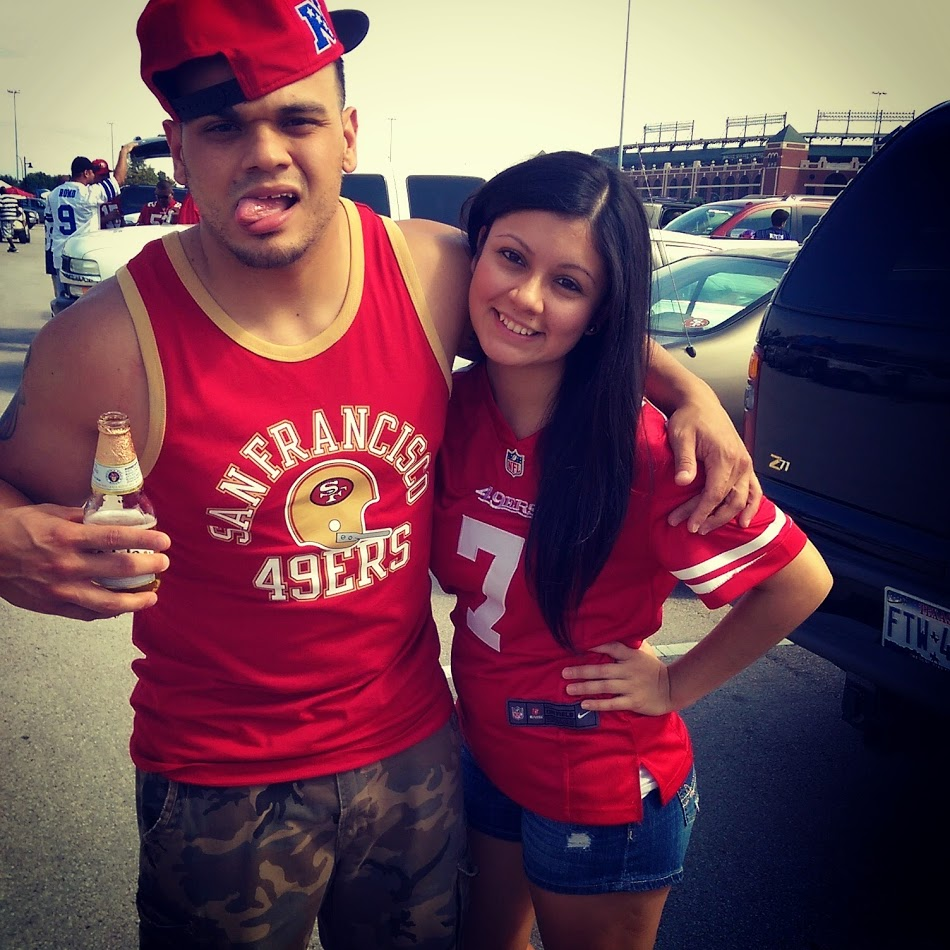

About Me
Originally from Bethlehem, Pa. Life has led me to many places. After High School I enlisted in the United States Navy,and spent 4 year in Seattle, Wa. Deploying 3 times, seeing amazing places, such as Thailand, Singapore, China, Japan,Hawaii and some not so great places like Iraq. Building some great bonds while serving, once I seperated I found myself settling into Oklahoma City after a short stay back in Pennsylvania and Arizona. While in Oklahoma I met my wife, had my first child and got life back in order. My wife and I relocated I hope for the final time in my lifetime, to Austin, where we have made our first home purchase and are expecting our second child.
Since moving to Austin, I started a sports podcast with my childhood buddy Fernando. From the Seats podcast, is just a fans perspective of your favorite sports teams.
I would like to continue podcasting as a hobby, and maybe eventually turn it into somethong more, if you'd like to offer insight on the podcast, or just share some friendly banter about a sport or team of your choosing. Feel free to contact me.